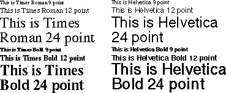
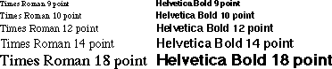
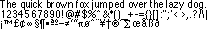
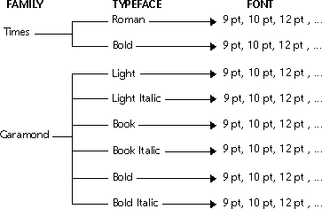

Font
The Font class provides a window system-independent means of querying and accessing the font resources of a particular display. Font resources are organized hierarchically according to family, face, and font. A family is a group of typefaces that are designed to be used together. Figure 36 shows some of the typefaces available for the "Times" and "Helvetica" families. Note that the word "font" is often popularly applied to what is, strictly speaking, a family.
Figure 36. Representative samples from the Times and Helvetica families

A typeface is a set of outlines that appear similar at all point sizes, such as "Times Roman" or "Helvetica Bold." Figure 37 shows selected sizes of these two typefaces.
Figure 37. The Times Roman and Helvetica Bold typefaces in selected sizes

A font is a typeface with a particular size or transformation matrix. Figure 38 shows an example of the "Helvetica Medium 10 point" font.
Figure 38. The Helvetica Medium 10 point font

Figure 39 shows the hierarchical relationship of families, typefaces, and fonts for the Times and Garamond families. From this diagram you can see that the Garamond family has six typefaces: Light, Light Italic, Book, Book Italic, Bold, and Bold Italic. Each typeface within the Garamond family has many fonts: 9, 10, 12, 14, 18, and 24 point, for example. The Font class allows you to specify a font of any point size for a particular typeface.
Figure 39. The family/typeface/font hierarchy

Galaxy stores family information in structures of the type vfontFamily, typeface information in structures of the type vfontFace, and fonts themselves in structures of type vfont. Galaxy modules that are Font class clients generally use the type vfont to refer to font resources.
Fonts are measured in Drawing class user space units. Since user space units normally correspond to points (there are approximately 72 points in an inch), font sizes should be treated as point sizes. If user space has been scaled in one direction or another, you can assume that font scaling is intentional. Refer to the Drawing chapter for more information about user space and display transformations.
Fonts can be represented by the window system as outlines or bitmaps. Bitmapped font characters are constructed from a two-dimensional array that specifies the pixels touched by the character. Because pixels are discrete, bitmapped fonts look jagged when scaled to larger point sizes. Outline fonts are constructed from mathematical algorithms that specify the shape of each character in a continuous coordinate system. Outline fonts produce acceptable character representations at all point sizes, but a bitmapped font may look better at a given point size since individual pixels can be tuned by the font designer.
Figure 40. Bitmapped font and outline font
The Font class supports both bitmapped and outline fonts, subject to the font technology supported by the window system. Since not all displays support outline fonts, window system drivers may transform a suitably sized font bitmap to simulate outline font scaling. You need not be concerned about which kinds of fonts are actually in use¯the Font class will select the best representation available for a given display.
The Font class computes font metrics (measurements) using fixed-point units so that fractional-width and scaled characters are always measured correctly, regardless of the screen resolution. A set of integer interfaces is also available for applications that want to trade accuracy for convenience. For example,FixStringWidth has fixed-point arguments, while StringWidth has integer arguments. For page layout applications and other domains where formatting accuracy is important, it is imperative that the fixed-point interfaces be used for visual fidelity. Fixed-point values can easily be converted to floating-point values, if desired. Refer to the Fixed Point Library documentation in the Plane Geometry chapter for more information about fixed-point numbers.
Since applications should not have to rely on the availability of particular fonts, the Font class adopts a "closest match" strategy when font requests are made. This allows a particular host system to return the most appropriate font for the particular hardware, but allows the application to be as specific as it needs to be. The closest match strategy provides a graceful degradation of display quality when font resources are limited. The Font class is designed to allow documents containing fonts to be moved across different platforms without relying on the application to coordinate font resources.
Font Representation
Transformation matrices map coordinates between two-dimensional coordinate systems. The Font class uses transformation matrices to specify the size and degree of rotation or skewing for a particular font. The visual appearance of a font depends on the font's matrix and the current transformation matrix when the font is drawn. Refer to the Plane Geometry chapter for more information about transformation matrices, and to the Drawing chapter for more information about the current transformation matrix. Requesting Fonts
An application can request a font based on characteristics such as family, typeface, and size, or it can obtain a list of all known fonts and select among these. All Font class lists are sorted in meaningful ways to facilitate the creation of lists, menus, and other user interface objects. You can also use the Galaxy Standard Font Chooser to let the user select a font from all the fonts available on the display. In particular, font key strings are not meant to be visible to the user. Refer to the Font Chooser chapter for more information about the Font Chooser. Fonts and Multiple Devices
The Font class is designed to be used across multiple devices, such as displays and printers. The Font class is used by the window system services as well as by those device drivers that must coordinate fonts for their devices. Each device with a distinct set of fonts is assigned a unique integer identifier by the Font class during device registration. Device registration occurs when the device makes itself known to the Font class. Each family, typeface, or font is marked with a set of flags that indicate which devices it is available on. If a device driver is instructed to use a font that is not available on its device, it can ask the Font class to locate the most appropriate font that is available on the device.
Table of Contents
Help Map
Need help? Contact Visix.